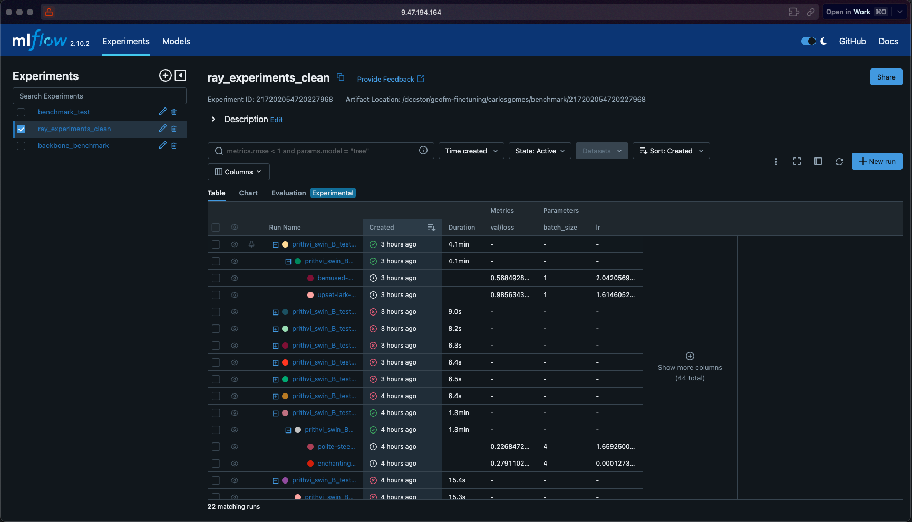

CLAIMED Framework¶


CLAIMED is a framework for building, packaging, and executing portable AI components at scale.
What is CLAIMED?¶
CLAIMED began life as a library of reusable AI and data components — ready-made,
shareable building blocks for the recurring chores of machine learning: reading and
writing data from COS/S3, NLP preprocessing, model training, and benchmarking. That
component library is still here (claimed.components.*) and still the foundation
everything else builds on.
What turned CLAIMED from a handy library into a genuinely powerful framework is the C3 Component Compiler. C3 takes any notebook, Python script, or R script and compiles it into a fully containerised, runnable, composable component — complete with a CLI, a Docker image, and KubeFlow Pipelines / CWL / Kubernetes descriptors — with zero boilerplate. Suddenly every piece of code you write becomes a first-class, reusable CLAIMED component, not just the ones someone hand-packaged in advance. C3 is the heart of the framework today.
From there, CLAIMED grew outward by integrating two complementary projects rather than reinventing them:
- MLX (
claimed.mlx) brings experiment and asset tracking — full provenance for every dataset, model, and job — and powers the grid-compute backend that distributes component runs across heterogeneous clusters. - terratorch-iterate (the
iterate2engine, shipped insideclaimed) adds hyperparameter optimisation (HPO) and neural architecture search (NAS) on top of your components, with MLflow logging, Optuna-driven search, and Ray parallelisation.
Put together, CLAIMED lets you go from a single script all the way to a tracked, optimised, cluster-scale AI pipeline — without ever leaving the framework.
| Layer | Package / module | Purpose |
|---|---|---|
| C3 – Component Compiler | claimed.c3 |
Turns notebooks, Python scripts, and R scripts into fully containerised, executable, composable AI components |
| Component Library | claimed.components.* |
The original ready-to-use components for COS/S3 I/O, benchmarking, NLP, training, and more |
| MLX – ML eXchange backend | claimed.mlx |
Tracks datasets, models, jobs and other assets; powers the grid-compute backend |
| iterate – HPO / NAS | claimed (iterate2) |
Hyperparameter optimisation and neural architecture search via MLflow, Optuna, and Ray |
Key Features¶
- Zero-boilerplate packaging – point C3 at any
.ipynb,.py, or.Rfile and get a Docker image plus KFP/CWL/Kubernetes descriptors - Grid parallelisation – distribute work across heterogeneous clusters with a single
claimed runcall - MLX asset tracking – full provenance for every dataset, model, and job
- CLI-first – every component is callable as
claimed run <module> --param value - KubeFlow Pipelines & Kubernetes – first-class output formats
Quick Install¶
Quick Example¶
# List files in a COS/S3 bucket
claimed run claimed.components.util.cosutils \
--cos-connection s3://KEY:SECRET@endpoint/bucket \
--operation ls \
--local-path .
# Show all parameters for any module
claimed run claimed.components.util.cosutils --help
Video Introduction¶
terratorch-iterate¶
A tool for benchmarking and hpo using TerraTorch.
Leverages MLFlow for experiment logging, optuna for hyperparameter optimization and ray for parallelization.
Environment¶
Using a virtual environment for all commands in this guide is strongly recommended. Package development was carried out with Poetry
Installation¶
Install torch >= 2.0 before installing this package
Package installation¶
# assuming you have an SSH key set up on GitHub
pip install "git+ssh://git@github.ibm.com/GeoFM-Finetuning/benchmark.git@main"
Suggested setup for development¶
pip install --upgrade pip setuptools wheel
pip install -r requirements.txt
pip install -r dev_requirements.txt
pip install -e .
Usage¶
This tool allows you to design a benchmark test for a backbone that exists in TerraTorch over:
-
Several tasks
-
Several hyperparameter configurations
To do this it relies on a configuration file where the benchmark is defined. This consists of:
-
experiment_name: MLFLow experiment to run the benchmark on. This is the highest level grouping of runs in MLFLow. -
run_name: Name of the parent (top-level) run under the experiment. -
description: Description added to top level mlflow run. -
defaults: Defaults that are set for all tasks. Can be overriden under each task. -
tasks: List of tasks to perform. Tasks specify parameters for the decoder, datamodule to be used and training parameters. -
n_trials: Number of trials to be carried out per task, in the case of hyperparameter tuning. -
save_models: Whether to save models. Defaults to False. (Setting this to true can take up a lot of space). Models will be logged as artifacts for each run in MLFlow. -
storage_uri: Location to use for storage for mlflow. -
optimization_space: Hyperparameter space to search over. Bayesian optimization tends to work well with a small number of hyperparameters. -
bayesian_search: Whether to perform a bayesian search (future hparam configs depend on results of past runs) or a random search. Defaults to True, which does bayesian search.
See benchmark_v2_template.yaml in the git repo for an example.
To run a benchmark, use benchmark --config <benchmark_file>.
To run a benchmark over a ray cluster (which must be created before running), use ray_benchmark --config <benchmark_file>.
To check the experiment results, use mlflow ui --host $(hostname -f) --port <port> --backend-store-uri <storage_uri> and click the link.

terratorch_iterate.backbone_benchmark.benchmark_backbone(defaults, tasks, experiment_name, storage_uri, logger, ray_storage_path=None, backbone_import=None, run_name=None, n_trials=1, optimization_space=None, save_models=False, run_id=None, description='No description provided', bayesian_search=True, continue_existing_experiment=True, test_models=False, run_repetitions=REPEATED_SEEDS_DEFAULT, report_on_best_val=True)
¶
Highest level function to benchmark a backbone using a single node
Parameters:
| Name | Type | Description | Default |
|---|---|---|---|
defaults
|
Defaults
|
Defaults that are set for all tasks |
required |
tasks
|
list[Task]
|
List of Tasks to benchmark over. Will be combined with defaults to get the final parameters of the task. |
required |
experiment_name
|
str
|
Name of the MLFlow experiment to be used. |
required |
storage_uri
|
str
|
Path to MLFLow storage location. |
required |
ray_storage_path
|
str | None
|
Ignored. Exists for compatibility with ray configs. |
None
|
backbone_import
|
str | None
|
Path to module that will be imported to register a potential new backbone. Defaults to None. |
None
|
run_name
|
str | None
|
Name of highest level mlflow run. Defaults to None. |
None
|
n_trials
|
int
|
Number of hyperparameter optimization trials to run. Defaults to 1. |
1
|
optimization_space
|
dict | None
|
Parameters to optimize over. Should be a dictionary (may be nested) of strings (parameter name) to list (discrete set of possibilities) or ParameterBounds, defining a range to optimize over. The structure should be the same as would be passed under tasks.terratorch_task. Defaults to None. |
None
|
save_models
|
bool
|
Whether to save the model. Defaults to False. |
False
|
run_id
|
str | None
|
id of existing mlflow run to use as top-level run. Useful to add more experiments to a previous benchmark run. Defaults to None. |
None
|
description
|
str
|
Optional description for mlflow parent run. |
'No description provided'
|
bayesian_search
|
bool
|
Whether to use bayesian optimization for the hyperparameter search. False uses random sampling. Defaults to True. |
True
|
run_repetitions
|
int
|
Number of times that the experiment will be repeated. Defaults to 1. |
REPEATED_SEEDS_DEFAULT
|
Source code in terratorch_iterate/backbone_benchmark.py
291 292 293 294 295 296 297 298 299 300 301 302 303 304 305 306 307 308 309 310 311 312 313 314 315 316 317 318 319 320 321 322 323 324 325 326 327 328 329 330 331 332 333 334 335 336 337 338 339 340 341 342 343 344 345 346 347 348 349 350 351 352 353 354 355 356 357 358 359 360 361 362 363 364 365 366 367 368 369 370 371 372 373 374 375 376 377 378 379 380 381 382 383 384 385 386 387 388 389 390 391 392 393 394 395 396 397 398 399 400 401 402 403 404 405 406 407 408 409 410 411 412 413 414 415 416 417 418 419 420 421 422 423 424 425 426 427 428 429 430 431 432 433 434 435 436 437 438 439 440 441 442 443 444 445 446 447 448 449 450 451 452 453 454 455 456 457 458 459 460 461 462 463 464 465 466 467 468 469 470 471 472 473 474 | |
Default and Task specification¶
Under each of these, as well as for the optimization_space, the structure of parameters and their hierarchy for terratorch_task follows the same as used in terratorch. The terratorch task contains the actual parameters that will be passed to terratorch.
An exception is made for batch_size in optimization_space, which should be passed in the root level and is not passed to the terratorch_task.
terratorch_iterate.benchmark_types.Defaults(trainer_args=dict(), terratorch_task=dict())
dataclass
¶
Default parameters set for each of the tasks.
These parameters will be combined with task specific ones to form the final parameters for the Terratorch training.
Parameters:
| Name | Type | Description | Default |
|---|---|---|---|
trainer_args
|
dict
|
Arguments passed to Lightning Trainer. |
dict()
|
terratorch_task
|
dict
|
Arguments for the Terratorch Task. |
dict()
|
terratorch_iterate.benchmark_types.Task(name, type, datamodule, direction, terratorch_task=None, metric='val/loss', early_prune=False, early_stop_patience=None, optimization_except=set(), max_run_duration=None)
dataclass
¶
Parameters passed to define each of the tasks.
These parameters are combined with any specified defaults to generate the final task parameters.
Parameters:
| Name | Type | Description | Default |
|---|---|---|---|
name
|
str
|
Name for this task |
required |
type
|
TaskTypeEnum
|
Type of task. |
required |
terratorch_task
|
dict
|
Arguments for the Terratorch Task. |
None
|
datamodule
|
BaseDataModule | GeoBenchDataModule
|
Datamodule to be used. |
required |
direction
|
str
|
One of min or max. Direction to optimize the metric in. |
required |
metric
|
str
|
Metric to be optimized. Defaults to "val/loss". |
'val/loss'
|
early_prune
|
bool
|
Whether to prune unpromising runs early. Defaults to False. |
False
|
early_stop_patience
|
(int, None)
|
Whether to use Lightning early stopping of runs. Defaults to None, which does not do early stopping. |
None
|
optimization_except
|
str[str]
|
HyperParameters from the optimization space to be ignored for this task. |
set()
|
max_run_duration
|
(str, None)
|
maximum allowed run duration in the form DD:HH:MM:SS; will stop a run after this amount of time. Defaults to None, which doesn't stop runs by time. |
None
|
terratorch_iterate.benchmark_types.ParameterBounds(min, max, type, log=False)
dataclass
¶
Dataclass defining a numerical range to search over.
Parameters:
| Name | Type | Description | Default |
|---|---|---|---|
min
|
float | int
|
Minimum. |
required |
max
|
float | int
|
Maximum. |
required |
type
|
ParameterTypeEnum
|
Whether the range is in the space of integers or real numbers. |
required |
log
|
bool
|
Whether to search over the log space (useful for parameters that vary wildly in scale, e.g. learning rate) |
False
|
terratorch_iterate.benchmark_types.TaskTypeEnum()
dataclass
¶
Bases: Enum
Enum for the type of task to be performed. segmentation, regression or classification.
terratorch_iterate.benchmark_types.ParameterTypeEnum
¶
Bases: Enum
Enum for the type of parameter allowed in ParameterBounds. integer or real.
Credits¶
Work by Carlos Gomes (carlos.gomes@ibm.com). This project was created using https://github.ibm.com/innersource/python-blueprint.